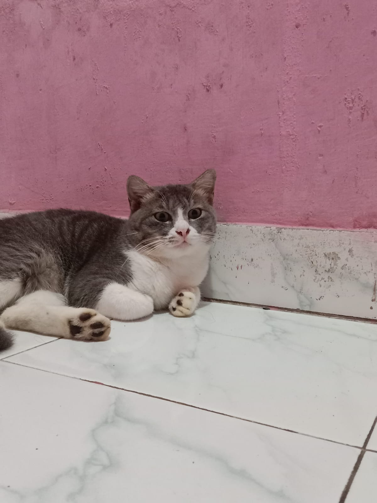
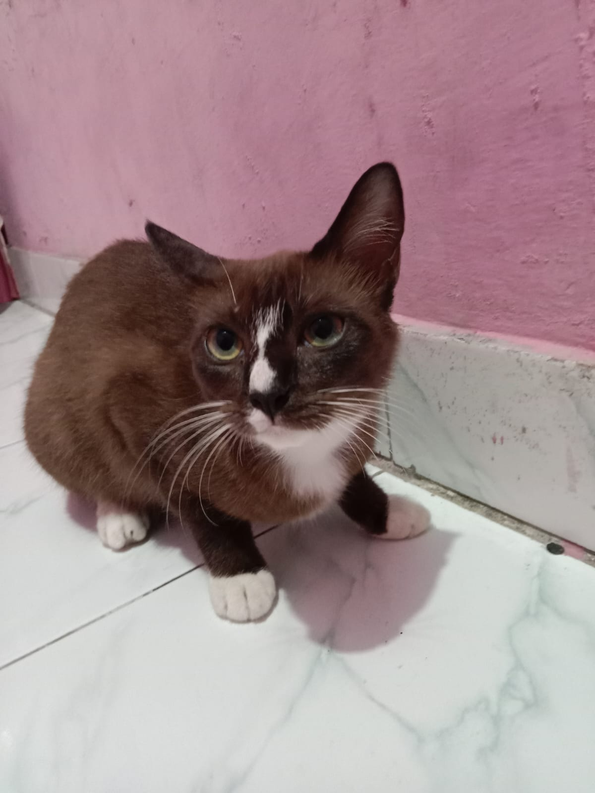
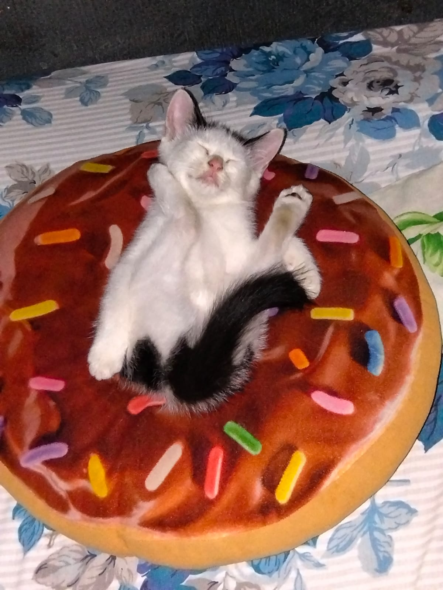

Selamat datang di dunia kucingku! di sini aku akan membagikan cerita tentang kucing-kucing yang aku adopsi.
Memlihara kucing itu bukan sekedar hobi aja bagi aku, tapi cara aku buat healing dari banyaknya tugas-tugas kuliah yang menumpuk.
Awalnya aku hanya ingin memlihara satu kucing saja, tapi setelah itu aku melihat kucing dijalan yang terlantar jadi aku berniat mengadopsinya.
Begitupun dengan kucing lainnya, hingga akhirnya aku memiliki 3 kucing di rumah.
(✿◡‿◡)
Klik pada foto untuk melihat kepribadian unik mereka!


